HiHi Puffy AmiYumi Themeを歌おう
ハイハイパフィー主題歌の話
 2005年8月に正式に日本放送が始まる「ハイハイパフィーアミユミ（Hi
Hi Puffy AmiYumi）」。※1
2005年8月に正式に日本放送が始まる「ハイハイパフィーアミユミ（Hi
Hi Puffy AmiYumi）」。※1
TeenTitans Themeはすでにカラオケに入っているようです。ということは、そのうちこの曲もカラオケに入るかもしれない！※2
その時のためにHiHi Puffy AmiYumi Themeをマスターしておこう！
というわけで、ん〜〜〜〜スタト！
■HiHi Puffy AmiYumi Themeの歌詞の謎
ところで、このHiHiPuffyは日本人であるパフィーがモデルということで、妙な現象が起きている。
パフィー本人たちの実写パートがあったり、アニメ本編に翻訳なしの日本語がときおり混じってたりしている。そういうわけで日本とカートゥーンが妙な混じり具合をしているわけなんだが、そのため日本とアメリカでヘンな「空耳」現象が発生。
日本の場合だと、このタイトルロゴが「がしがし」または「九州」に見える、なんていう人が多い。
さて、ではアメリカでは？
引用もとはtvtomeのHiHiPuffyAmiYumiページとトゥーン日誌＠サンタクルズの記事。
トゥーン日誌のほうはCC（クローズドキャプション）で流れたという。
微妙に違うので、比較しやすいように多少修正した
|
TV TOMEより |
トゥーン日誌の記事より |
| Nani! It all started when we first met, And strapped on our guitars. We made music so great and cool, That soon we were rock stars. The biggest in Japan. Yumi: Sona kota Nia! With tons of screaming fans. Ami: Yay, Ami Yumi! We're out on tour around the world, So come and join the band. Eins! Zwei! Drei! Hi Hi Puffy AmiYumi Show Hi Hi Puffy AmiYumi Show Hi Hi Puffy AmiYumi Show Anything is possible. Hi Hi Puffy AmiYumi Show! Hi Hi Puffy AmiYumi say "go"! Hi Hi Puffy AmiYumi Show! Anything is possible. We've grown so powerful. Make yourself comfortable. Nowwwww... |
It all started when we first met and strapped on our guitars. We made music so great and good that soon we were rock stars. We're biggest in Japan (そんなことない!) with tons of screaming fans, (ほんまおおきに) we're out of tours around the world so come and join the band! (eins, zwei, drei) Hi Hi Puffy AmiYumi Show Hi Hi Puffy AmiYumi Show Hi Hi Puffy AmiYumi Show Anything is possible. Hi Hi Puffy AmiYumi Show Hi Hi Puffy AmiYumi say “Go!” Hi Hi Puffy AmiYumi Show Anything is possible; We've grown so powerful. Make yourself confortable now …… |
現在webで多く流通しているのはこの歌詞。多分海外の人の聞き取りによるものだろう。
ズバリ、この歌詞は間違ってます！！
CCといえど、おそらく正式な歌詞データをもらったものでなく「聞き取り」によるものだろう。
では、正しい歌詞と比較しながらアメリカ空耳を検証してみよう。
■HiHi Puffy AmiYumi Themeの空耳
とりあえず、tv tome版のものを検証材料とします。
外人聞き取り版を■とし、正しいものを●として比較。
|
■:Nani! 「なに！」って聞こえるのか・・・ |
|
| 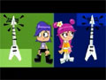 |
■●: ここはOK。ただ、トゥーン日誌のCCでは「great and good」になっていたのが気になります。coolとgoodの発音って近いのかしらん？ |
|
■:The biggest in Japan. うむ、よくがんばった！聞き取りの人。 |
|
| 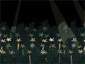 |
■:With tons of screaming fans. う〜む、いきなりの大阪弁にめんくらったのか、全然別な文章に。多分イントネーションからの想像なんだと思うけど、これこそアメリカン空耳！！ 歌詞は前と繋がってるんだけど、「熱狂的な声援をおくるファンに囲まれた（アーチスト）」とかいう感じでしょうか。 ただ、どうもこのパート、映像はAMIだがセリフは由美のようです。ええええ！オープニング作った人、もしかして区別ついてない？？？ |
|
■●: はい、ここはOK。 「世界を回るツアーをしてるよ〜見に来てね！」 |
|
| 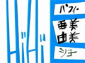 |
■●: はいサビの部分です。タイトルコールがここで3回続くんですが・・・問題は次の3回目のタイトルコール。 |
| 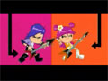 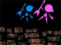 |
■:Hi Hi Puffy AmiYumi Show はいここ、三度目のタイトルコールには「on the」が入ります。空耳じゃないんだけど、聞き取りにくかったのか、それとも3回続くという先入観が聞き逃したのか。注意深く聞けばちゃんと言っているのが確認できます。 むしろ問題は次の3回タイトルコール。 |
| 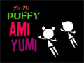 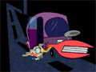 |
■:Hi Hi Puffy AmiYumi Show! このフレーズの2回目のとこ注目。 わかるかこんなもの〜〜！ |
| 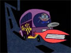 |
■:We've grown so powerful. 言われてみれば確かに聞こえる「空耳」 |
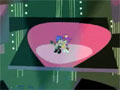 |
■●: はい、最後はOK。 「さあ、くつろいでね」という感じかしら。 |
というわけで、正しい歌詞はこちら
|
HiHi Puffy AmiYumi Theme |
|
(noli !) We made music so great and cool The biggest in Japan With tons of screaming fans We're out on tour around the world Hi Hi Puffy AmiYumi Show Hi Hi Puffy AmiYumi Show With rock so powerful |
これでカラオケ入っても大丈夫！！
って、大丈夫じゃない。当然カラオケではフルコーラス版だろうから、TV版では短すぎます。
まあ、そんなわけで、CD買えば歌詞カードもついてくるのでCD買って覚えましょう。
てことは、このページ 意味ない？
そう、単純にアメリカン空耳をやってみたかっただけでした。
■おまけでHiHi
カラオケといえば、海外サイトにカラオケのページがあります。
| 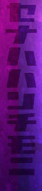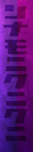 |
主題歌の「HiHi Puffy AmiYumi Theme」でなくて、なぜか「PLANET TOKYO（『赤いブランコ』の英語版）」ですが。 よく見ると、ステージ脇に謎のカタカナが！ 「セナハハンチモニ」 なんだこれは？？？また外人がテキトーなインチキ日本語を使ってるだけなのか？ いいえ違います。 キーボードを「かな入力」にして「HiHiPuffyAmiYumi」と打ち込んでみましょう、すると・・・・！ |
（記：2005年5月）
※1：8月には始まりませんでした・・・結局2005年10月に地上波で放送（英語音声無し、カット版）。CNでは2006年1月から放送。でも地上波と同じカット版。 同6月より完全版放送。まともに放送されるまで1年かかるのか・・・
※2：その後、やっぱりカラオケに入りました。
参考リンク：
CartoonNetworkのHiHiPuffy（アメリカ）
CartoonNetworkのHiHiPuffy（日本）
CD:
Hi
Hi Puffy AmiYumi（日本版）
伴奏のみの曲も収録されているのでカラオケ練習向け？
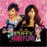Hi
Hi Puffy AmiYumi（海外版）